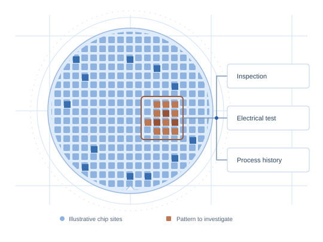
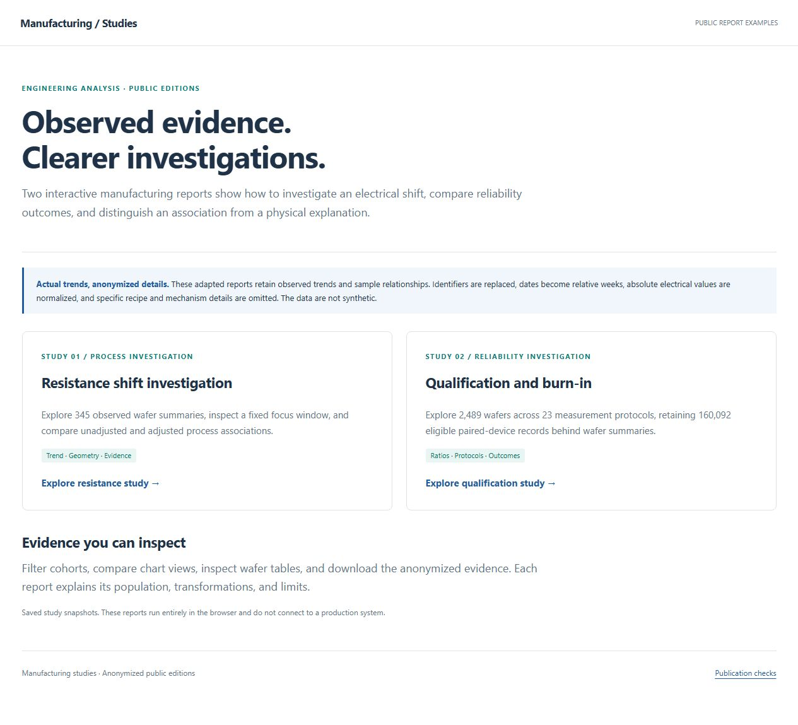
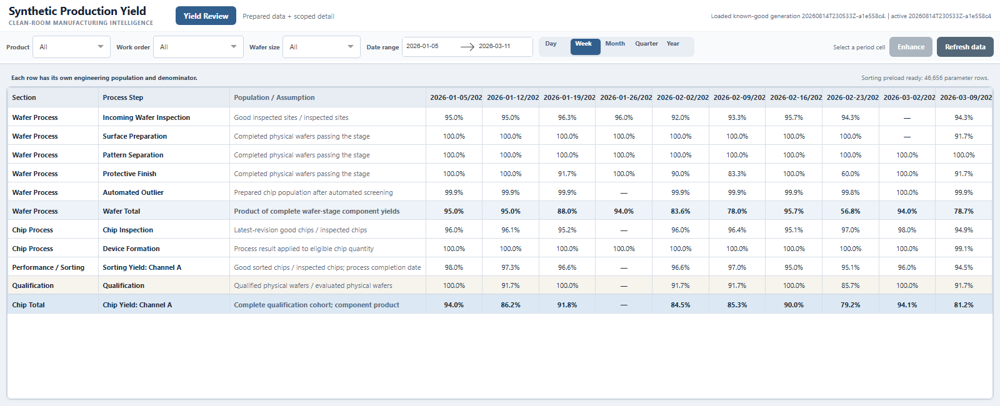
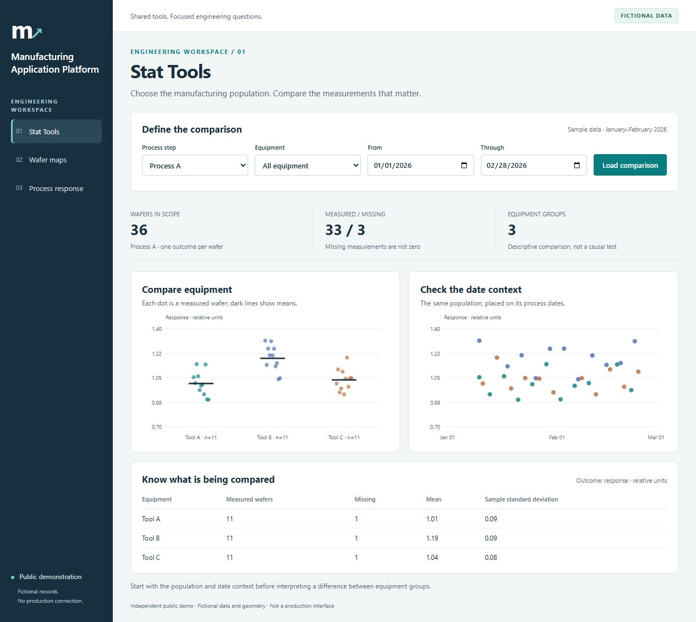

Understand an electrical shift.
Compare wafer populations and examine process associations, then test whether the initial explanation holds up under closer scrutiny.
Quality · Manufacturing · Software
I’m Matthew Chung. I investigate manufacturing problems, qualify suppliers, and build tools that help engineering teams make better decisions.
From technical audits to wafer-level analysis, my work connects sound engineering judgment with software people can use.

01 Investigate quality & reliability
02 Qualify suppliers & audit processes
03 Build & operate engineering tools
Selected investigations
What changed? Which population is affected? What evidence should guide the next engineering action?

Compare wafer populations and examine process associations, then test whether the initial explanation holds up under closer scrutiny.
Follow paired measurements and burn-in outcomes, with clear comparison groups and limits on what the evidence can establish.
These reports use anonymized observed data. The software previews and demos below use fictional data.
Two flagship systems
One platform prepares the evidence. The other puts engineering tools within reach of the people who need them.
01 / The analytical foundation
Start where yield shifted. Trace the change to work orders, wafers, and chips. Compare failure categories and check whether inspection and test patterns line up.
Automatic refresh keeps prepared views current, including historical corrections. Selected-wafer detail loads on demand; the last validated dataset stays available if a refresh fails.
Production-scale snapshot · November 4, 2026 · Test values are individual parameter values, not a count of tests or chips.

Under the hood SQL Server → Python & pandas → Parquet → Dash / Plotly
02 / Shared engineering capability
A shared browser portal for real engineering work—not just a collection of dashboards. Query data, compare equipment statistically, investigate wafer patterns, and complete manufacturing workflows.
I built and operate the platform, with centralized hosting, updates, health monitoring, and recovery. Two hosts share application workloads, with manual failover to a surviving host.

6,136app opens & reloads in about eight weeks
Sept 11–Nov 6, 2026 · including 3,270 in October
Usage measures activity, not people. Measurement details and distinct-client counts are in the case study.
Engineering judgment, end to end
The tools support the work. My foundation is quality engineering: understanding the process, evaluating risk, and making the evidence useful for the next decision.
Technical direction & ownershipSupplier qualification, technical audits, and manufacturing readiness—connecting requirements with evidence and follow-up.
Root-cause investigations, SPC, inspection and test analysis, and traceability across wafers, lots, and process history.
Problem definition through analysis, development, validation, rollout, and support, in collaboration with process, database, and IT owners.